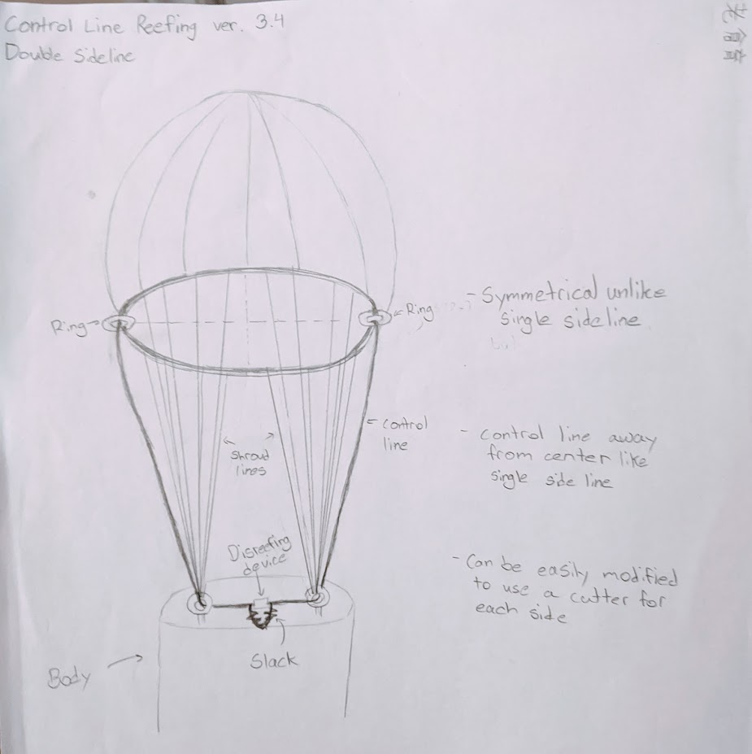

Rocketry: Parachute and Recovery
Waterloo Rocketry is the University of Waterloo's Rocket design team. Every year, we iteratively design and create a high-power rocket to launch at the Spaceport America Cup. Our rockets are fully student researched and designed.
My latest proposal
Our development cycle starts here. In 2020, I researched parachute reefing. To avoid high g-forces and to avoid drifting by descending quickly, this method chokes one parachute at a high altitude, as opposed to sequentially releasing two parachutes differing in diameter. I proposed multiple possible designs outlining the deployment sequence and how the parachute would be rigged. After such research, the team meets together and decides on the design. We hope to implement my proposal in our 2022 rocket!

Recovery module bulkheads I milled in our machine shop
At this stage we begin constructing individual components of our rocket. I’m often in our machine shop milling recovery module components, such as the separation bulkheads. I test to ensure the parts mate properly, match the specification we decided on, and log any important changes.